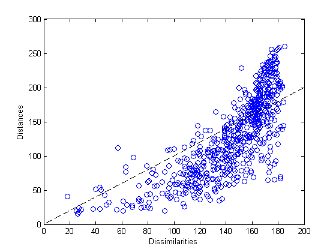
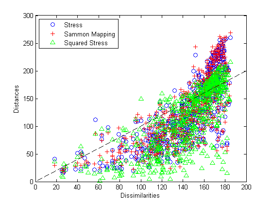
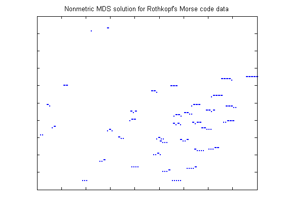
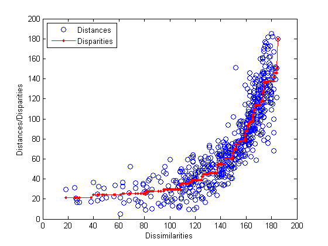
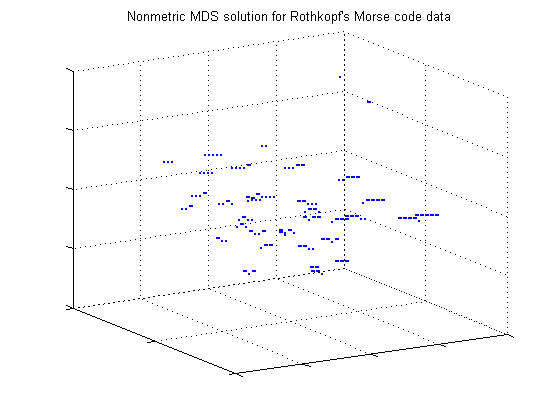
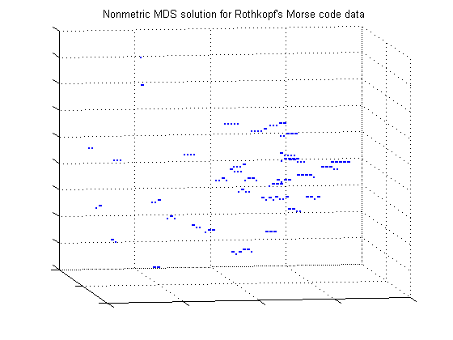

非古典的多次元尺度構成法
多次元尺度構成法 (MDS) は、非類似度データを可視化するための方法です。この種のデータは、オブジェクトのセットがあり、各オブジェクトの特性ではなく、オブジェクトの各ペアの類似や非類似の程度しか測定できない場合に発生します。たとえば、都市のセットの緯度と経度ではなく、都市間の距離しかわからない場合があります。しかし、MDS は、物理的な距離よりも抽象的な非類似でも機能します。たとえば、ビーナッツ バターのいくつかのブランドの類似の程度に関して消費者にアンケートを行う場合があります。
MDS の一般的な目標は、点間距離がオリジナルの非類似に "近い" 1 次元、2 次元、または 3 次元の点の配置を作成することです。MDS の別の形式では、別の基準を使用して "近さ" を定義します。これらの点は、オブジェクトのセットを表すので、点のプロットは非類似度の視覚的表現として使用できます。
このデモでは、MDS の "非古典的" 形式を示します。"古典的" MDS の応用例は、古典的多次元尺度構成法のデモで説明します。
目次
Rothkopf のモールス コード データセット
MDS のデモを示すために、モールス コードの認識を調べる実験で収集したデータを使用します (Rothkopf, E.Z.、J.Exper.Psych.、53(2):94-101)。被験者は、2 つのモールス コード信号 (36 の英数字文字を表す 1 つまたは複数の "ドット" と "ダッシュ" の音のシーケンス) を続けて聞いて、信号が同じかどうかを判断します。被験者はモールス コードを知りません。2 つの異なる特性の間の非類似度は、これらの特性が正しく判断されている頻度です。
非類似度の 36x36 の行列が、行列の下側の対角要素を含む 630 要素のベクトルとして格納されます。関数 squareform を使用して、ベクトル形式とフル行列形式の間の変換を行います。最初の 5 文字とその非類似度を行列の形式で示します。
load morse
morseChars(1:5,:)
dissMatrix = squareform(dissimilarities); dissMatrix(1:5,1:5)
ans =
'A' '.-'
'B' '-...'
'C' '-.-.'
'D' '-..'
'E' '.'
ans =
0 167 169 159 180
167 0 96 79 163
169 96 0 141 166
159 79 141 0 172
180 163 166 172 0
これらのデータでは、大きい値は多くの被験者が 2 つの信号を区別できたことを示し、信号の非類似度が高かったことを示します。
計量的尺度法
計量的 MDS は、点間の距離がオリジナルの非類似度と近似である点の配置を作成します。その近似の程度の測定の 1 つは「ストレス」と呼ばれます。最初に、これを使用します。配置を計算するために、関数 mdscale に非類似度データ、点を作成する次元の数 (2)、および使用する近似程度の基準の名前を代入します。
Y1 = mdscale(dissimilarities, 2, 'criterion','metricstress'); size(Y1)
ans =
36 2
この例では、mdscale は、2 次元の点のセットを返します。これらの点をプロットできますが、この解 (配置) を使用してデータを可視化する前に、この解からの点間距離がオリジナルの非類似度を再現するかどうかをチェックするプロットを作成します。
Shepard プロット
Shepard プロットは、点間距離 (n(n-1)/2) に対するオリジナルの非類似度の散布図です。これは、MDS 解の近似の程度を判断するのに役立ちます。近似の程度が低い場合、点間の大きい (小さい) 距離はデータの大きい (小さい) 非類似度に対応しない可能性があるので、適切な可視化を行うことができない場合があります。Shepard プロットでは、1:1 線の周囲の狭い散布は非類似度への距離の適切な近似を示し、広い散布または非線形パターンは近似の程度が低いことを示します。
distances1 = pdist(Y1); plot(dissimilarities,distances1,'bo', [0 200],[0 200],'k--'); xlabel('Dissimilarities'); ylabel('Distances')
このプロットは、非線形パターンと広い散布の両方を示すので、2 次元におけるこの計量的解が適切でない可能性を示しています。前者は、大きい非類似度の多くが過剰に可視化され、中程度および小さい非類似度が控えめに可視化されていることを示しています。後者は、可視化における距離は一般的に非類似度を適切に反映していないことを示唆します。具体的には、大きな非類似度が正しく理解されないことを示します。
計量的条件の比較
3 番目の次元を使用して、可視化の忠実性を向上させることができます。自由度が高いので、近似が向上するはずです。別の条件も試すことができます。その他の 2 つの量的条件は、Sammon マッピングおよび二乗ストレス ("sstress") と呼ばれます。それぞれの条件では異なる解が得られ、いずれかがオリジナルの非類似度の可視化により適している可能性があります。
Y2 = mdscale(dissimilarities,2, 'criterion','sammon'); distances2 = pdist(Y2); Y3 = mdscale(dissimilarities,2, 'criterion','metricsstress'); distances3 = pdist(Y3);
Shepard プロットは、3 つの解の違いを示します。
plot(dissimilarities,distances1,'bo', ... dissimilarities,distances2,'r+', ... dissimilarities,distances3,'g^', ... [0 200],[0 200],'k--'); xlabel('Dissimilarities'); ylabel('Distances') legend({'Stress', 'Sammon Mapping', 'Squared Stress'}, 'Location','NorthWest');
非類似度の最大値では、二乗ストレス条件の散布がその他の 2 つの条件よりも 1:1 線に近い傾向があることがわかります。したがって、これらのデータでは、二乗ストレスは一部のデータを控えめに表現しますが、最大の非類似度の維持に適しています。非類似度の小さい値では、Sammon マッピング条件の散布がその他の 2 つの条件よりも 1:1 線に近い傾向があることがわかります。したがって、Sammon マッピングは、小さい非類似度の維持に適しています。ストレスは、その間に位置します。3 つのすべての条件は、非線形の特定の量を示しているので、計量的尺度法が適していない可能性を示しています。しかし、条件の選択は、可視化の目的により異なります。
非計量的尺度法
非計量的尺度法は、MDS の 2 番目の形式で、その目的は計量的尺度法よりも若干あいまいです。MDS は、点のペアごとの距離がオリジナルの非類似度に近似する点の配置を作成するのではなく、非類似度のランクだけを近似します。言い換えれば、非計量的 MDS は、点間距離がオリジナルの非類似度の単調変換を近似する点の配置を作成します。
具体的には、点間の距離が大きい場合は大きな非類似度に相当し、点間の距離が小さい場合は小さい非類似度に相当します。これは、場合によっては、調査対象の複数の項目またはカテゴリの間の関係を示すのに十分です。
まず、2D で点の配置を作成します。クラスカルの非計量的ストレス条件での非計量尺度法は、mdscale の既定です。
[Y,stress,disparities] = mdscale(dissimilarities,2); stress
stress =
0.1800
mdscale の 2 番目の出力は、使用した条件の値で、解によって再現された非類似度の程度を示します。小さい値は、高い近似を示します。この配置のストレスは約 18% で、非計量的ストレス条件では低から中程度と見なされます。許容可能な条件値の範囲は、条件によって異なります。
mdscale の 3 番目の出力は、格差として知られるベクトルです。これらは、単なる非類似度の単調変換で、次に示す非計量的尺度法の Shepard プロットで使用します。
非類似度データの可視化
この近似は理想的なものという訳ではありませんが、2D 表現は最も簡単に可視化できます。ドットとダッシュの各信号の文字列をプロットして、被験者が特性の違いを認識した理由を理解することができます。この配置の方向とスケールは完全に任意なので、軸ラベルと値は表示されていません。
plot(Y(:,1),Y(:,2),'.', 'Marker','none'); text(Y(:,1),Y(:,2),char(morseChars(:,2)), 'Color','b', ... 'FontSize',12,'FontWeight','bold', 'HorizontalAlignment','center'); set(gca,'XTickLabel',[], 'YTickLabel',[]); title('Nonmetric MDS solution for Rothkopf''s Morse code data');
この再構成は、2 つの軸で説明できます。北西/南東の方向が信号の長さを区別し、南西/北東の方向がドットとダッシュを区別します。最も短い信号の E と T の 2 つの特性は、この解釈の外にあります。
非計量的 Shepard プロット
非計量尺度法では、格差だけでなく距離も Shepard プロットで示すのが慣例で、距離による格差の再現の程度だけでなく、非類似度から格差への単調変換の非線形の程度をチェックできます。
distances = pdist(Y); [dum,ord] = sortrows([disparities(:) dissimilarities(:)]); plot(dissimilarities,distances,'bo', ... dissimilarities(ord),disparities(ord),'r.-'); xlabel('Dissimilarities'); ylabel('Distances/Disparities') legend({'Distances' 'Disparities'}, 'Location','NorthWest');
このプロットは、非計量的尺度法での距離による格差の近似の程度 (赤い線の周囲の青い円の散布) を示し、格差が非類似度のランクを反映しています (赤い線は非線形ですが増加していません)。このプロットを計量的尺度法の Shepard プロットと比較すると、2 つの方法の違いがわかります。非計量的尺度法は、オリジナルの非類似度ではなく、その非線形変換 (格差) を再現します。
したがって、非計量的尺度法には長所と短所があります。非計量的距離は計量的距離による非類似度よりも再現性が高く、このプロットの散布は計量的プロットよりも小さくなります。しかし、格差は非類似度の関数として非常に非線形です。したがって、非計量的解では、可視化における小さい距離はデータの非類似度が小さいことを示しますが、その可視化における点間の絶対距離は文字通り解釈するべきではないことを理解しておくことが重要です。注意すべきは相対距離です。
3D の非計量的尺度法
2D 制約のストレスは高いので、3D 配置を試してみます。
[Y,stress,disparities] = mdscale(dissimilarities,3); stress
stress =
0.1189
このストレス値は非常に低いので、高い近似を示します。3D で配置をプロットできます。ライブの MATLAB® 図は対話形式で回転できます。ここでは、2 つの角度から確認します。
plot3(Y(:,1),Y(:,2),Y(:,3),'.', 'Marker','none'); text(Y(:,1),Y(:,2),Y(:,3),char(morseChars(:,2)), 'Color','b', ... 'FontSize',12,'FontWeight','bold', 'HorizontalAlignment','center'); set(gca,'XTickLabel',[], 'YTickLabel',[], 'ZTickLabel',[]); title('Nonmetric MDS solution for Rothkopf''s Morse code data'); view(59.18); grid on
この角度からは、1 シンボル信号および 2 シンボル信号で表される文字は最も区別しやすいので、長い信号で表される文字よりも区別され、また相互に区別されていることがわかります。ビューを別の角度に回転すると、長い文字は 2D 配置でシンボルの数とドットまたはダッシュの数によって認識されていることがわかります (この 2 つ目の角度からは、一部の短い文字は長い文字と誤って認識されていることがわかります)。
view(-9.8);
この 3D 配置は、2D 配置よりも距離を正確に再構築しますが、それが意味することは、被験者は主に含まれているシンボルの数およびドットとダッシュの数で信号を認識しているということに変わりありません。実際には、2D 配置は十分に許容可能と思われます。